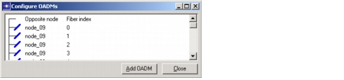

Transparent Networks > Workflow Description: Transparent Network Routing or Dimensioning > Defining OADMs Manually
Defining OADMs Manually
This operation is not supported on WP-OXC nodes. The OADM transparency mode follows that of the node: if you are in opaque node, the OADMs will be opaque; if you are in a transparent node, the OADMs will be transparent.
Note—You can only add OADMs between fibers that have been equipped with the same WDM line system.
Procedure 10-1 Defining OADMs Manually for a Node
- Open the Node Browser (choose Network > Node Properties, or right-click on a node and choose Node Properties).
- Set the Layer to OCH.
- Right-click on a node and choose Configure OADMs.
The Configure OADMs dialog box appears and shows all fiber pairs that terminate in that node. This window shows only those fibers that are equipped (using the default line system in transparent mode) but do not carry any traffic. The fiber pairs are identified by the name of the "Opposite node" and the "Fiber index."
Figure 10-3 Configure OADMs Dialog Box

- To introduce an OADM between two fibers, do the following:
- Click on a fiber to select it. (This also highlights the fiber in the Project Editor window.)
- While holding down the Control key, click on the second fiber and choose Add OADM.
After you add the required OADMs, you can view them in the OCH Node Browser. The Node Type field indicates whether OADMs are present in the node; for example, the field might read "OXC + OADMs". The OADM subtree shows the total number of ports for all OADMs in that node and lists (as children) the individual OADMs and their port usage. To remove an OADM, right-click on an OADM and select Remove OADM. For more information, see OCH Node Browser.
End of Procedure 10-1
| Home © 1987-2007 OPNET Technologies, Inc. All Rights Reserved. This software may be covered by one or more U.S. Patents. See complete patent notice in the Legal Notices section. OPNET Support Center |